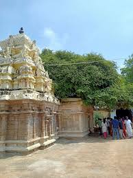

Thiru Uthirakosamangai is an ancient Shiva temple in the Ramanathapuram district of Tamil Nadu, known for its Maragatha Nataraja (Emerald Nataraja) idol, said to be the oldest in the world. The temple, also called the Mangalanatha Swamy Temple, is a significant pilgrimage site with a history spanning around 3,000 years and is mentioned in the hymns of the 9th-century saint Manickavasagar. Visitors can reach the temple by train to Ramanathapuram and then by road, as it is located about 18 km from the town. Significance & History World's Oldest Shiva Temple: Uthirakosamangai is considered one of the oldest Shiva temples in the world. Manickavasagar: The temple is closely associated with the saint Manickavasagar, who is believed to have attained enlightenment here. Spiritual Importance: Lord Shiva is said to have imparted the secrets of the Vedas to Parvati here. Key Features Maragatha Nataraja: The temple houses a rare, life-sized emerald idol of Nataraja. Dravidian Architecture: The temple showcases ancient Dravidian architectural styles. Arudhra Festival: The annual Arudhra Darisanam festival attracts many devotees. Temple Chariot: A temple chariot is parked near the Rajagopuram. Location Near Ramanathapuram: The temple is located about 18 km from Ramanathapuram. Nearest Airport: Madurai is the closest airport. Nearest Railway Station: The Ramanathapuram railway station is the nearest.
